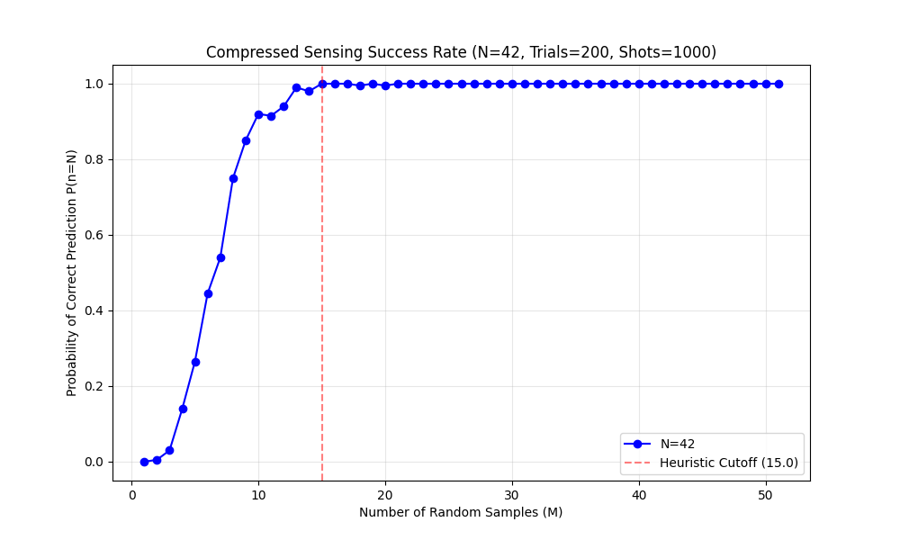
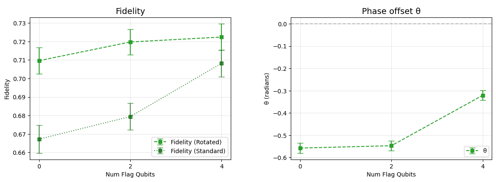

Diagonal entries are outcome probabilities; the corner
off-diagonals measure the superposition itself.
A coin flip scores exactly \(F = 1/2\). Everything above
\(1/2\) lives in the orange corners: \(C\) is the number to
measure.
Fidelity from parity oscillations
The fit returns amplitude \(C \ge 0\) and phase
\(\theta\); the fidelity is \(F = (P + C\cos\theta)/2\).
Population \(P\) chance of reading all-0s or all-1s
\(Z\)-basis counts:
1 circuit
Coherence \(C\) rotate every qubit by \(\phi\), measure
all; a shot's parity is +1 iff an even
number read 1; average over shots
average parity \(\mathcal{P}(\phi) = C\cos(N\phi +
\theta)\). Resolving any
frequency up to \(N\): two samples per
oscillation (Nyquist), the \(2N = 10\) dots,
each one circuit.
At \(N = 100\): 200 measurement circuits,
just to verify the state.
What compressed sensing is
The right-hand chart is the signal's
recipe: the signal rewritten as a
sum of simple waves, one entry per wave saying how much of it
the signal contains. Natural signals have
nearly empty recipes.
A JPEG keeps the few big entries and looks identical, but it
measures everything first: fine when
a measurement is a cheap pixel.
Compressed sensing
pays for the information, not the signal
length: few random samples, solve for the big
entries.1 Ours is the expensive case:
each measurement is a quantum
circuit.
1Brunton,
Steven L., and J. Nathan Kutz. Data-Driven Science and
Engineering. Cambridge University Press, 2019.
The observation: the signal is sparse
For an ideal GHZ state, the average-parity curve is a
single cosine at frequency
\(N\): one spike below.
The bottom panel is the curve's
recipe: how much of each
candidate frequency it contains. Ours reads 0.9 at
frequency \(N\), zero elsewhere: 2 of \(\sim 200\)
numbers (a cos and a sin amount).
Sparse means the recipe is
nearly empty.
Recovering a sparse signal from few random samples is the
textbook compressed sensing problem:
\(M \propto \log N\) random
angles (orange dots) replace the \(2N\) equally
spaced ones.
Why random beats regular
Frequency 2, sampled at 8 equally spaced angles.
Frequency 10
passes through every one of the same
samples: \(\cos(10\phi_k) = \cos(2\phi_k)\) exactly. A
regular grid has a period for impostors to hide behind; ruling
that out for every frequency up to \(N\) is what costs
\(2N\).
A random
angle has no period: distinct frequencies agree there with
probability zero, so each further sample rules out a
constant fraction of the wrong
candidates: ∼log(candidates) samples
leave one survivor.
Recovery separates detection from estimation
1. measure at \(M \approx 5\ln N\)
random angles
➔
2. joint fit: penalty leaves one
frequency
➔
3. refit the survivor: \(C\) and
\(\theta\)
Step 2 is the Lasso1: Fit all candidate
frequencies together, with an
\(L_1\) penalty on the cosine and sine coefficients; weak
candidates are driven
exactly to zero.
Why so few: amplitude and phase absorb the first samples,
then each further one rules out a constant fraction of the
wrong frequencies. \(M \propto \log N\) suffices, and the
refit leaves only shot noise.
1Tibshirani,
Robert. “Regression shrinkage and selection via the
lasso.” Journal of the Royal Statistical Society B 58.1
(1996).
The frequency doubles as a certificate
The oscillation frequency is the size of
the prepared coherence: a weight-\(w\) coherence oscillates at
frequency \(N - 2w\).
Fixed-frequency fit at \(n = N\): assigns
amplitude to a frequency that is not there.
Blind recovery: returns
\(n_{\mathrm{rec}} = N - 2\) and catches the failure.
\(n_{\mathrm{rec}} = N\): the dominant
coherence is the one an \(N\)-qubit GHZ state would
have.\(n_{\mathrm{rec}} \neq N\): caught, not
mis-certified. With \(F > 1/2\) this certifies genuine
\(N\)-partite entanglement against the phase-optimized target; it
does not rule out other errors or smaller competing
coherences.
Synthetic corrupted state, emulator sampling:
dominant coherence (\(C = 0.8\)) at \(N - 2\), zero
coherence at \(N\).
Known-frequency OLS at \(n = N\)
reports median amplitude 0.75 at \(M = 3\), still
\(\approx 0.19\) at \(M = 30\): a false-positive entanglement
certificate.
The CS pipeline recovers
\(n_{\mathrm{rec}} = N - 2\) and assigns zero coherence to
\(N\): the failure is caught.
Recovery saturates below the working budget

How often does blind recovery return the right frequency?
\(P(n_{\mathrm{rec}} = N)\) at \(N = 42\), 200 trials,
1000 shots per angle.
Two free passes, then a sharp climb:
success saturates by \(M \approx
15\), below the \(5\ln N \approx 19\) we actually
budget.
That margin is why the hardware run used
19 angles at \(N = 50\) instead
of 100.
Preparing states worth verifying
Preparing a GHZ state: chain versus tree
chain: depth \(N - 1\)
(7 layers at \(N = 8\))
tree: depth \(\log_2 N\)
(3 layers at \(N = 8\))
Same state, same gate count: only the CNOT
schedule differs; every layer is an
opportunity for noise, so shallower wins.
A CNOT copies bit flips, so a fault near the root fans out to
its whole subtree.
Shallow preparation trades depth for
high-weight errors.
Damage depends on when the
fault happens, not how big it was.
depth 1: floods the whole
subtree.
depth 2: reaches far less.
a leaf: exactly one qubit.
What a flag check measures, and what it does not
\(q_a q_b\)
flag reads
branch \(|0\cdots0\rangle\)
00
0
branch \(|1\cdots1\rangle\)
11
0
after a flip on \(q_a\)
10
1
after a flip on both
11
0 (missed)
Same answer on both branches:
the flag learns nothing about which, so the
superposition survives.
Flag reads 1: odd bit-flip
parity in its region; discard the shot.
The missed double flip (two independent faults) moves
the frequency to \(N - 4\): the certificate catches
what the flag cannot.
One check watches half the tree
The
check compares two qubits, so a fault is visible only if
it reaches exactly one of them:
true on these paths, not at the split
(both, cancels) or off them
(neither). Coverage counts that
path, a proxy rather than a guarantee.
A flip
on a covered qubit: caught, shot discarded.
Each
extra check adds less than the
last: submodular, so greedy is
within \(1 - 1/e\) of optimal.
Cost: acceptance, and extra
gates can hurt fidelity. A
hardware-dependent break-even.
Adapted from IBM's
low-overhead error detection1,2 to trapped-ion
connectivity.
1Martiel,
Simon, and Ali Javadi-Abhari. “Low-overhead error detection
with spacetime codes.” arXiv:2504.15725
(2025).
2Javadi-Abhari,
Ali, et al. “Big cats: entanglement in 120 qubits and
beyond.” arXiv:2510.09520 (2025).
Quantinuum H2-1 hardware, 50 qubits

19 random angles instead of
\(2N = 100\): 5× fewer circuits; 1000 shots per circuit
(cost-limited), hence the wide error bars.
\(F_{\mathrm{rot}} = (P + C)/2\) scores against the GHZ
state with the measured phase folded in; the standard fidelity
pays \(\cos\theta\). Rotated fidelity \(\approx 0.72\)
with 4 flags; both improve with
flags.
Large phase offset at zero flags: consistent with accumulated
coherent calibration error, amplified by
\(\theta = \sum_i \epsilon_i\) at \(N = 50\).
Run it yourself: metriq-gym
One dispatch, one poll, on any supported backend (IBM,
Quantinuum, IonQ, local simulators); the estimator and the
\(n_{\mathrm{rec}} = N\) size check come built in.
DFE and full parity oscillation are included as alternative
verification methods for comparison.